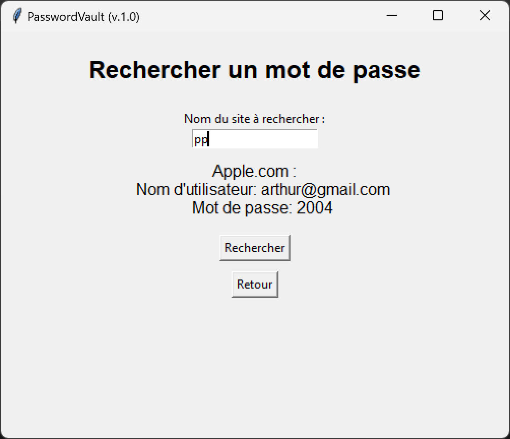
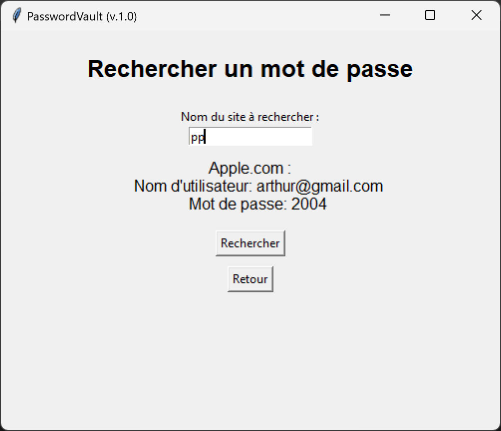

Description
PasswordVault est une application Python permettant de stocker et gérer ses mots de passe de façon sécurisée. Les mots de passe sont chiffrés et accessibles via une interface simple.
Aperçu


 

Technologies utilisées
- Python 3 (POO)
- tkinter (interface graphique)
- cryptography (chiffrement AES)
- Gestion de fichiers JSON
- Compilation en .exe avec PyInstaller
Fonctionnement
L'utilisateur définit un mot de passe maître pour accéder à son coffre-fort ou se connecte tout simplement si il a déjà un compte. Les mots de passe enregistrés sont chiffrés et ne peuvent être consultés qu'après authentification. L'application permet d'ajouter, de rechercher, de modifier et de supprimer des mots de passe, en bonus la génération de mots de passe robustes.
Pourquoi le nom "PasswordVault" ?
Le mot Vault signifie "coffre-fort" en anglais. Comme un coffre-fort numérique, cette application garde vos mots de passe à l’abri grâce au chiffrement. Le nom reflète à la fois la simplicité et la sécurité du projet.
Code source
Le code est disponible sur GitHub :
üîó Voir le code sur GitHub